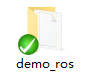

ROS SDK安装¶
注解
添加了对Linux1604下Ros的支持，用户可以通过搭建相关的Ros环境，根据Ros相关数据结构规范，获取模组中的数据信息。 提供了Ros发布模组信息的Demo，基于SDK接口实现，用户可以根据自身需要，参考使用，其中获取的数据与直接调用接口获取的数据完全一致。（只要安装了Linux对应的SDK环境就可以直接使用了。）
程序下载¶
Ros demo 使用说明¶
下载完解压出以下文件：
解压获得如下文件夹(文件位于Linux SDK 下的SDK-Linuxdemo_ros文件夹下)：
在此文件夹下使用：catkin_make进行编译。
编译成功后会生成如下文件夹：
此处以实例demo为例，会在此路径下生成可执行文件：
demo_ros\devel\lib\indemind_module\module_driver
build、devel文件夹 编译后生成：

将可执行文件module_driver放入SDK的lib目录下的1604目录下，使用sudo –s命令获取root权限 执行./run.sh 启动。
小技巧
(SDK/lib目录下1604文件夹下，已存在一个编译好的可执行程序，供测试使用)。
src目录下：

文件结构如下：
- include：包含了所需要的各种头文件；
- src:程序的源码
Ros demo 数据录制¶
1、创建文件夹用来存放rosbag文件
mkdir ~/rosbagfiles
cd ~/rosbagfiles
2、执行如下命令保存已经发布的所有主题数据
rosbag record –a
若只想保存指定主题下的数据：
rosbag record -O filename /Nodes/Topics
3、终止录制，在运行rosbag record命令的窗口中按Ctrl-C退出该命令，会在之前创建的rosbagfiles文件夹中创建一个以年份、日期和时间命名并以.bag作为后缀的文件。
4、检查回放文件：
rosbag info bagfile.bag
5、回放bag文件
rosbag play bagfile.bag